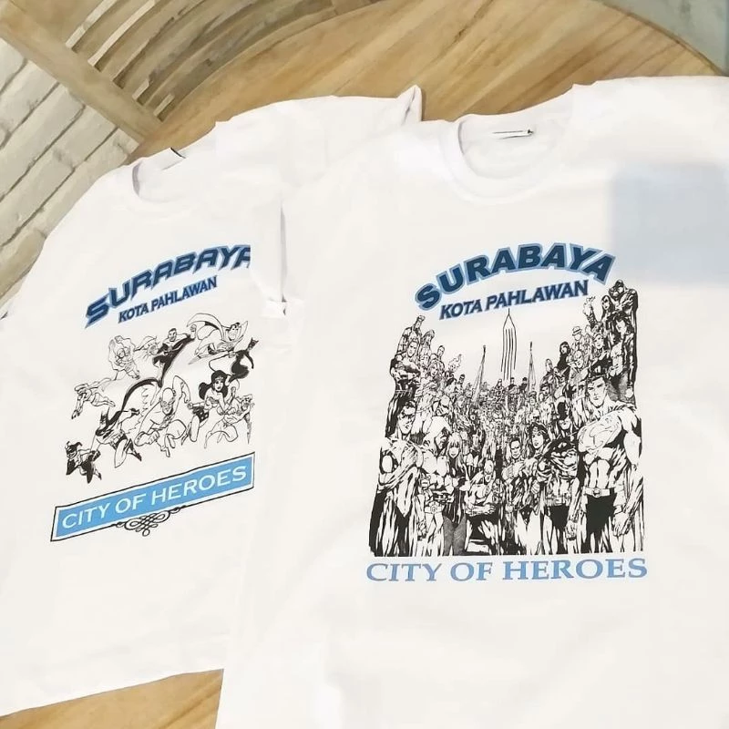
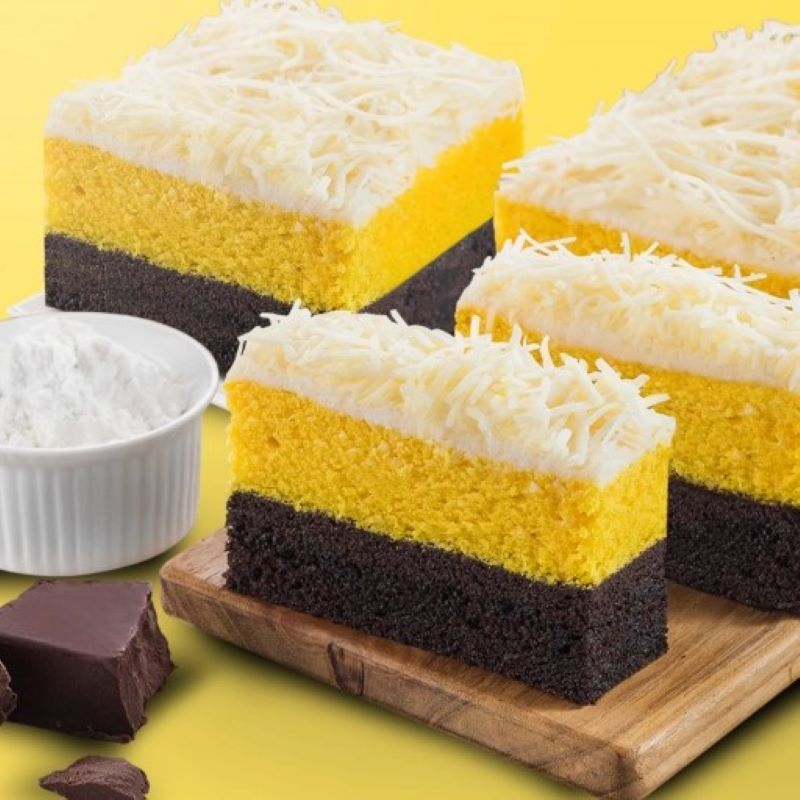
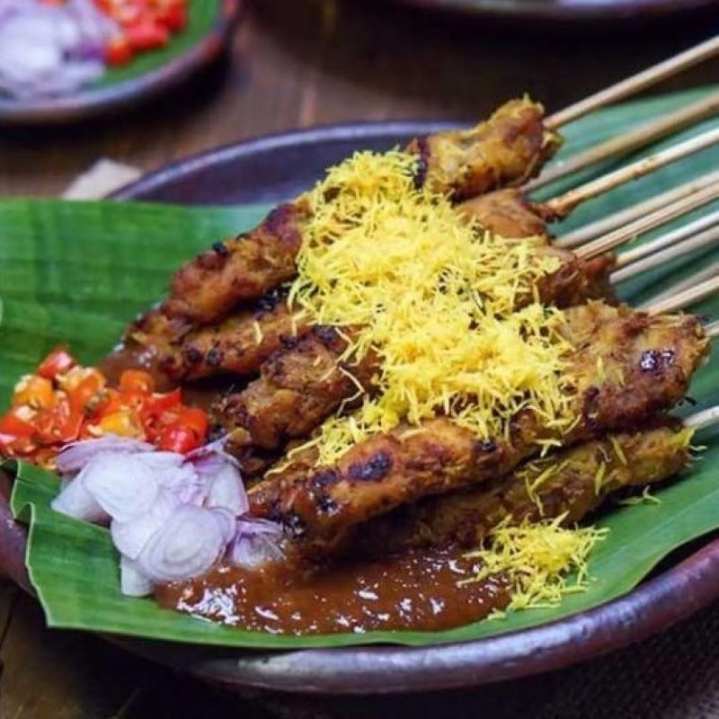
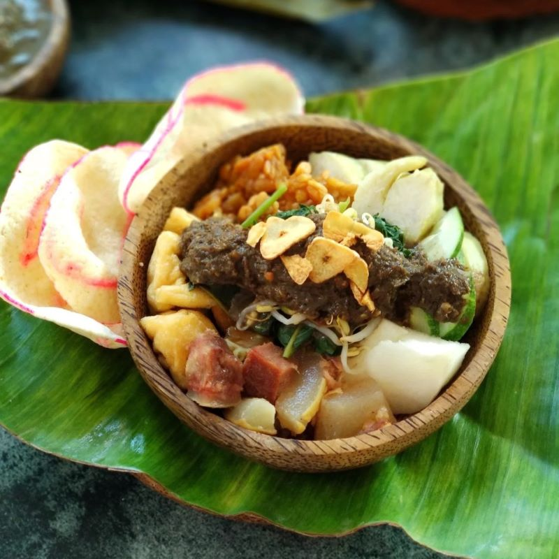
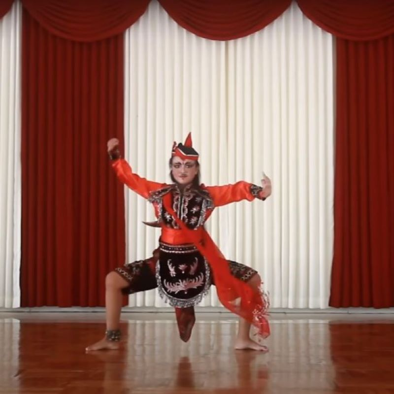
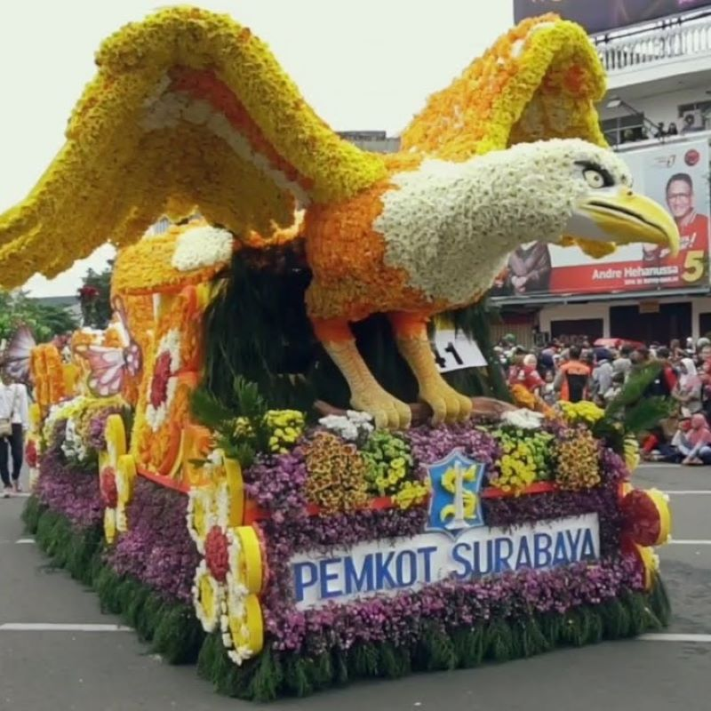
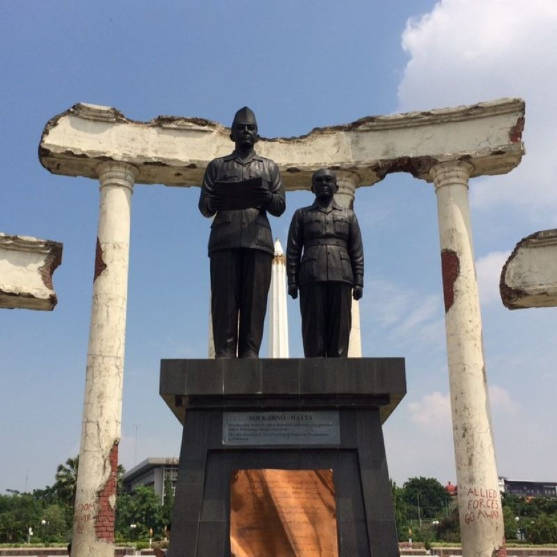
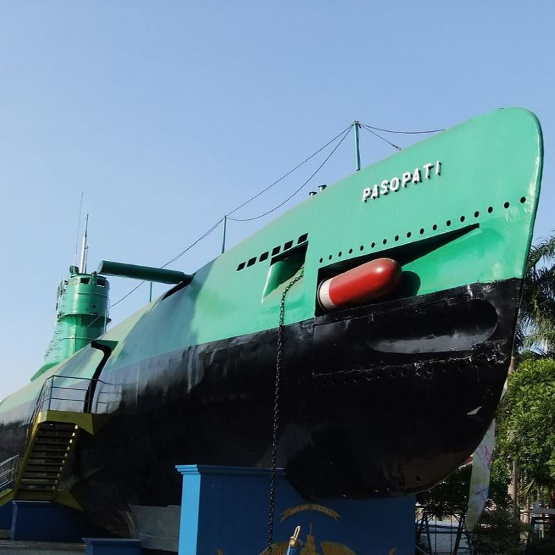
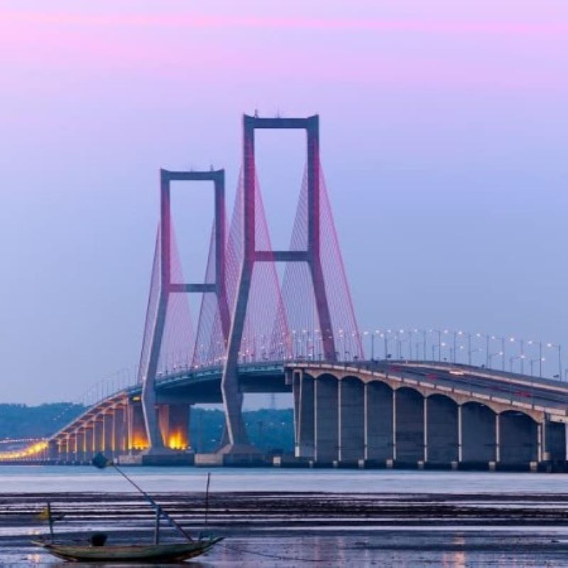

Surabaya, ibu kota Jawa Timur, dikenal sebagai Kota Pahlawan dengan warisan sejarah yang kaya. Kota ini memancarkan daya tarik yang unik, menghidupkan tradisi dengan semangat inovasi, dan menjadikannya sebagai pusat ekonomi yang berkembang pesat, serta menawarkan beragam kuliner dan destinasi wisata yang menarik.

Kaos dengan desain khas Surabaya yang menggambarkan budaya dan bahasa lokal dengan cara yang kreatif.

Kue lapis lembut dengan rasa yang bervariasi, yang menjadi ikon oleh-oleh dari Surabaya.

Sate khas Surabaya dengan daging yang dibalut kelapa parut, memberikan rasa gurih yang unik dan lezat.

Salad sayuran segar dengan cingur (hidung sapi) dan bumbu kacang yang kaya rasa. Rujak Cingur adalah simbol kuliner Surabaya yang unik.

Tari tradisional yang menggambarkan semangat juang masyarakat Surabaya, biasanya ditampilkan dalam acara-acara budaya.

Perayaan tahunan yang menampilkan berbagai atraksi seni dan budaya, termasuk parade kostum, tarian, dan musik.

didirikan untuk mengenang perjuangan rakyat Surabaya dalam pertempuran 10 November 1945. Tugu ini menjadi simbol pertempuran dan kebanggaan kota.

Monumen yang terbuat dari kapal selam KRI Pasopati 410, yang kini menjadi museum. Tempat ini memberikan edukasi tentang sejarah angkatan laut Indonesia.

Jembatan terpanjang di Indonesia yang menghubungkan Pulau Jawa dan Madura. Ikon Surabaya ini menawarkan pemandangan menakjubkan, terutama di malam hari.